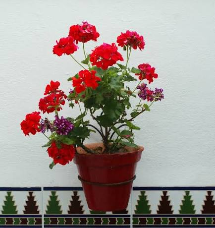
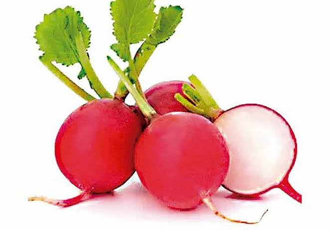

No te olvides de desayunar bien antes de salir de casa.
Es importante realizar un buen desayuno para tener energías para afrontar el día con optimismo.
Para saber más sobre la importancia de un buen desayuno, consulta los siguientes enlaces:
Hay que comenzar el día con una dieta equilibrada y los expertos recomiendan que un buen desayuno debe combinar lácteos, pan, cereales y frutas variadas que aportarán el 30% de los nutrientes que necesita diariamente el organismo.

